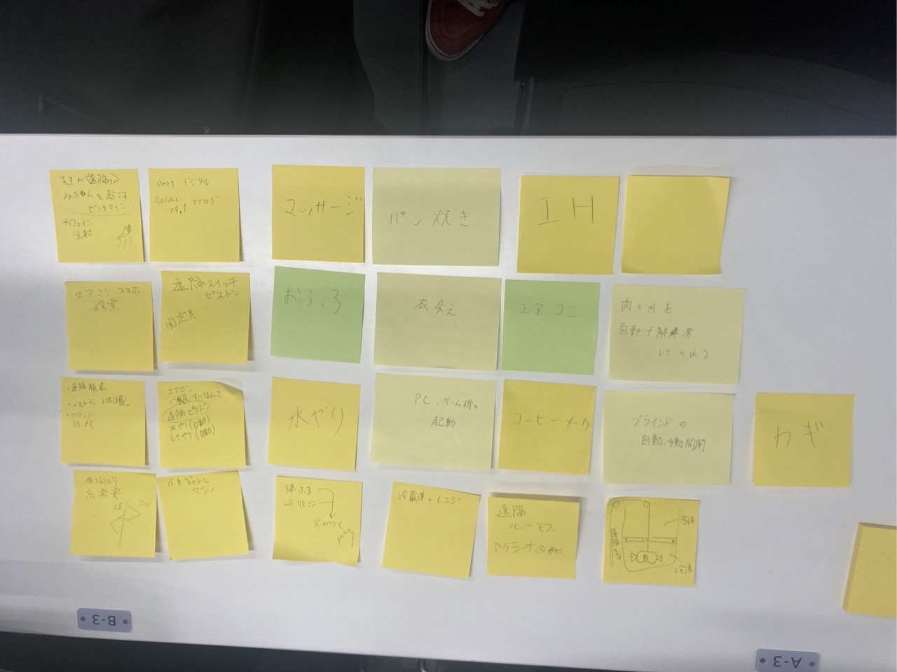

<h2>lotに関して</h2>
<ul>

    <li><h3>lotとは何か</h3></li>
<div>
lotとは「internet of thing」の略で「モノのインターネット」を意味します。<br>
従来インターネットに接続されていなかった様々なモノが、ネットワークを通じてサーバーや<br>
クラウドサービスに接続され、相互に情報交換する仕組みです。
</div>

<li><h3>実験した動画</h3></li>
<a href="https://www.youtube.com/shorts/Y_qZ4MVqVV0">こちらから</a>

<li><h3>lotで何ができそうか(グループワーク)</h3></li>


<li><h3>lotで何ができそうか（スケッチ）</h3></li>


</ul>
